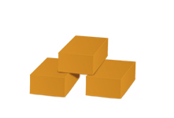
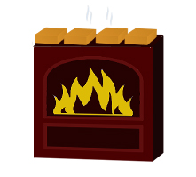
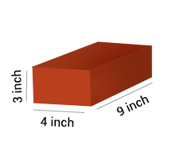
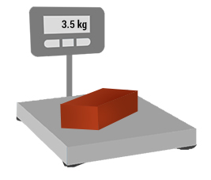

1 IMPORTANT POINTS
Q How bricks are made?
A
Bricks are made using following 3 steps
STEP 1 Clay is prepared for making the bricks
STEP 2 Either a mould or a wire cutter is used to create bricks from clay

STEP 3 They are burnt in the furnace where they gain their strength

Q How bricks are sold in the market?
A Bricks are sold as an individual unit in the market. Generally, bricks are delivered in a truck load which can have about 3000 to 8000 bricks.
Q What is the standard size of a brick?
A The standard size of a brick: Length 9 inch; Width 4 inch; Height 3 inch.

Q What is the weight of a brick?
A A brick weighs about 3 to 4 kg.

2 TYPES
Q What are the types of bricks?
A

3 BRANDS
Bricks are generally manufactured by local companies.
4 STORAGE AND HANDLING
Q How to store bricks on site?
A
1. Store bricks close to the construction so that breakage during transport is minimal.
2. Bricks should be stacked on dry patch of ground.
3. Bricks should not come in contact with mud, clay or soil.
4. The height of the stack should not be more than 10 bricks.
5 COSTING AND ESTIMATION
Q What are the prices of bricks in the market?
A The tentative prices of the bricks are:
| Brick Type | Tentative price of a block |
|---|---|
| Wire Cut Brick | Rs. 9 per unit |
| Table Mould Brick | Rs. 8 per unit |
Q What is the estimated number of bricks to construct a house?
Enter your built up area and number of stories in the following form and we will calculate the tentative number of bricks required.
Enter built up area (in sq. ft.)
Enter number of stories
Number of bricks required 0.00